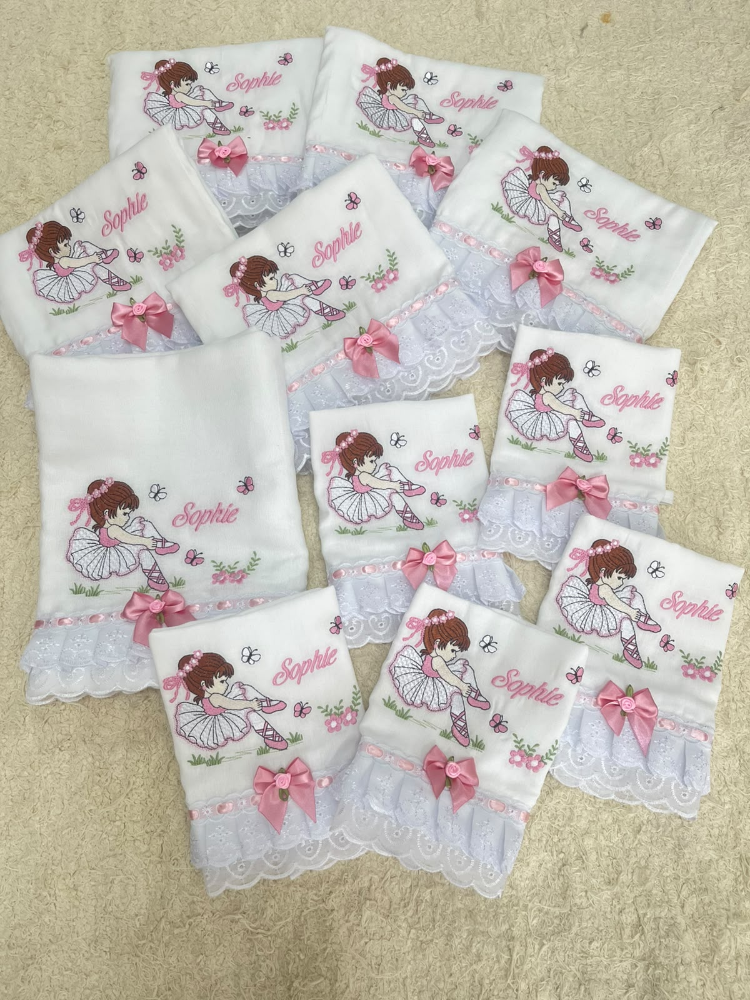
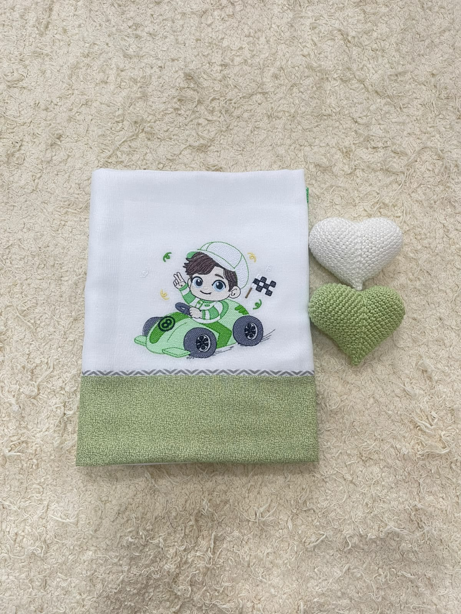
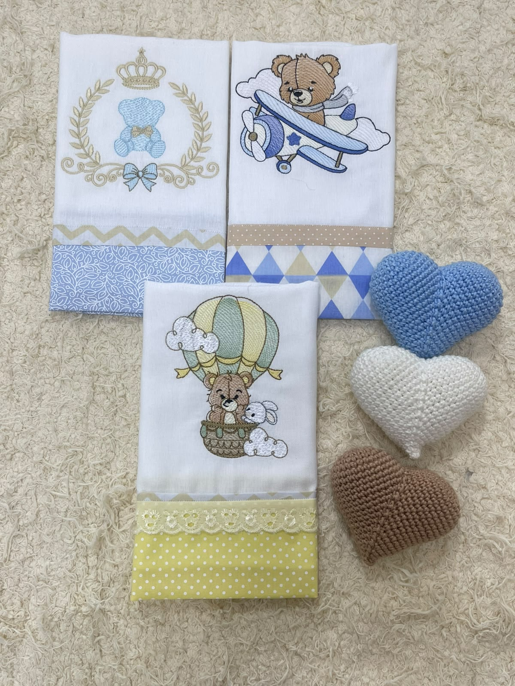
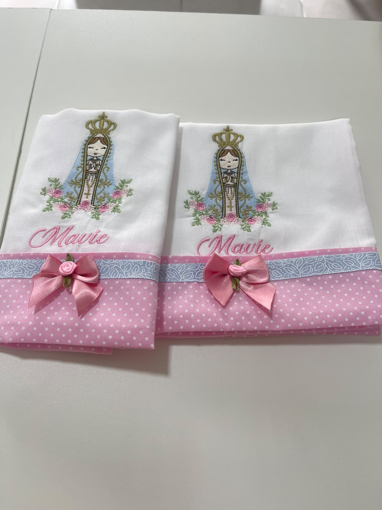
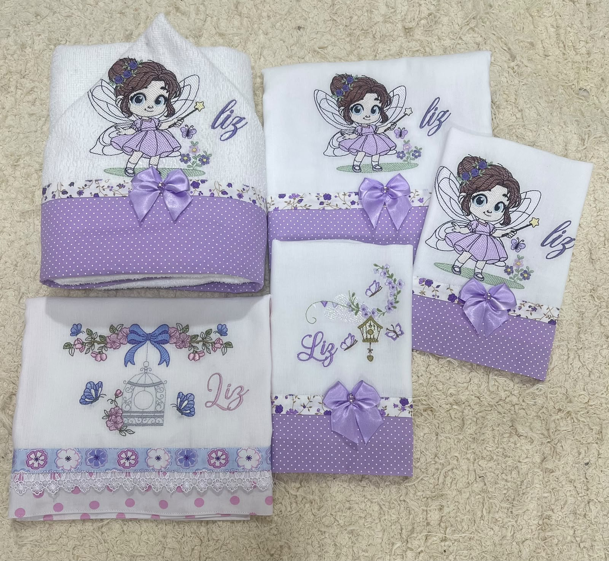
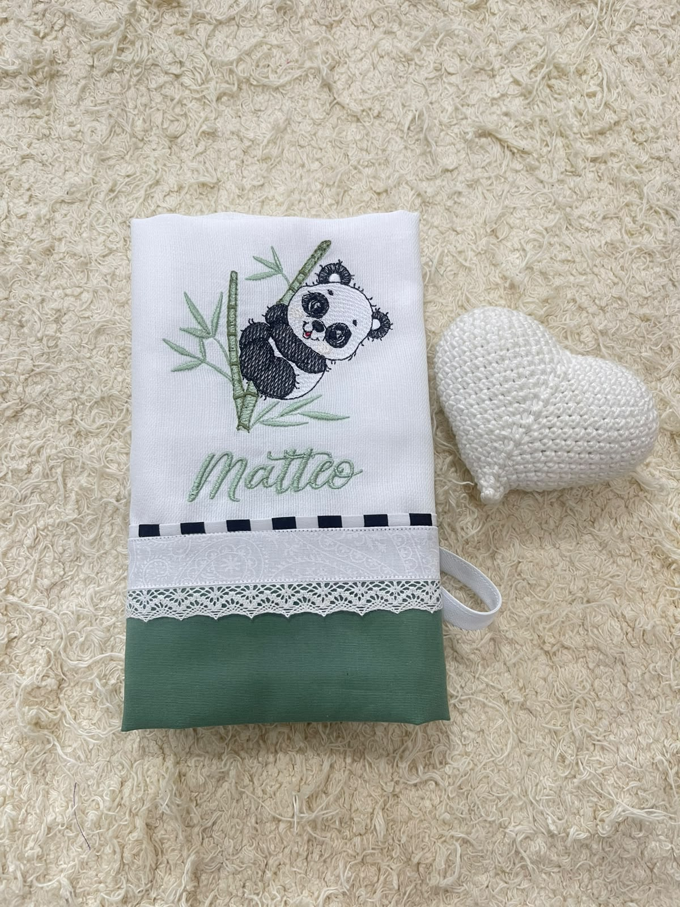
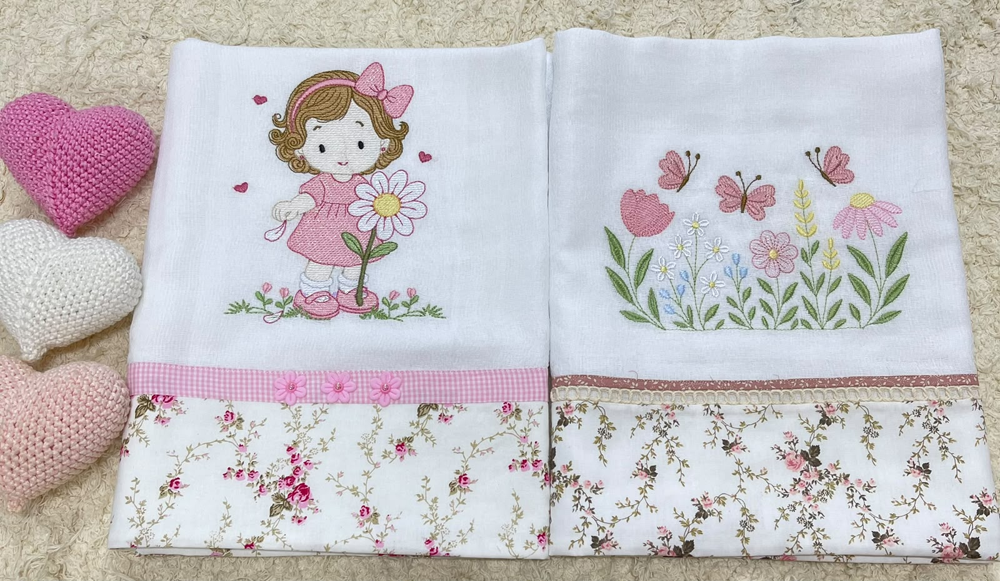
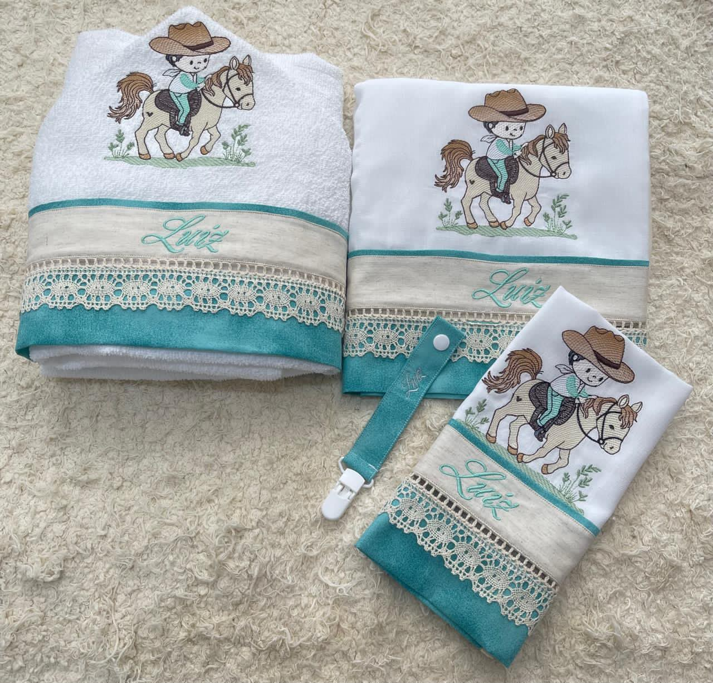

Bordados infantis personalizados
Bordados personalizados para tornar os primeiros momentos do seu bebê ainda mais especiais.
Cada peça é pensada com você: o nome, o tema e as cores que vão transformar um enxoval, um presente ou uma lembrança de batizado em algo único, feito à mão e cheio de significado.
- Peças feitas sob encomenda
- Personalização com nome, tema e cores
Para cada momento especial
Mais do que uma peça bordada, uma lembrança para guardar
Seja preparando o enxoval, escolhendo um presente de maternidade ou pensando nos detalhes do batizado, um bordado com nome e significado transforma o momento em algo só seu.
Preparando o enxoval
Cada peça do enxoval pode carregar o nome e o tema que vocês escolheram para o bebê.
Chegada do bebê
Marque a chegada com uma peça bordada especialmente para recebê-lo.
Presente de maternidade
Um presente personalizado mostra o cuidado que você quer transmitir.
Batizado
Peças bordadas para eternizar esse dia com detalhes que fazem sentido para a família.
Chá de bebê
Um presente diferente de tudo o que os convidados costumam levar.
Primeiro aniversário
Comemore a primeira volta ao sol com uma peça exclusiva e cheia de significado.
Presente de madrinha
Uma forma de expressar o carinho e o papel especial que você tem na vida do bebê.
Alguém especial
Para qualquer ocasião em que um detalhe bordado torna o presente mais pessoal.
Por que escolher o Ateliê do Bordado
Cuidado artesanal em cada detalhe
O que torna cada peça do Ateliê do Bordado especial.
Personalização do seu jeito
Nome, tema, cores, frases e detalhes escolhidos com o cliente, conforme a viabilidade do bordado.
Qualidade em cada detalhe
Acabamento cuidadoso e atenção durante toda a produção da peça.
Uma lembrança cheia de significado
Peças que podem acompanhar momentos importantes da família por muito tempo.
Atendimento próximo
Você conversa diretamente com o ateliê para explicar sua ideia e tirar dúvidas.
Nosso trabalho
Peças que contam uma história
Uma seleção de trabalhos do Ateliê do Bordado. Filtre por categoria e clique em uma imagem para ampliar.
O principal diferencial
Cada peça, do jeito que você imaginou
Você escolhe o que faz sentido para a sua história, e o ateliê cuida da execução com atenção a cada detalhe.
Cada solicitação é analisada individualmente para confirmar viabilidade, prazo e orçamento.
Processo simples
Como encomendar
Do primeiro contato até a peça pronta, em quatro passos.
-
Conte sua ideia
Compartilhe com a nossa equipe oque você imagina.
-
Escolha a peça
Defina a peça e os detalhes da personalização.
-
Confirme o orçamento
Receba a confirmação de orçamento e prazo antes de seguir.
-
Acompanhe a produção
Fique por dentro da preparação da sua encomenda.
Ideias para presentear
Para cada ocasião, uma peça com significado







Feito com carinho em cada detalhe
Sobre o Ateliê do Bordado
Cada peça passa por um cuidado dedicado durante a produção, do primeiro traço do bordado ao acabamento final. Mais do que produzir uma peça, o objetivo é transformar a ideia de cada cliente em algo que carregue significado.
O contato direto com quem encomenda é parte importante do processo: entender a história por trás de cada pedido é o que torna possível criar algo verdadeiramente pessoal.
Nossa loja
Venha nos visitar
- Rua Caio Martins, 123 — Centro, Governador Valadares/MG
- Segunda a sexta, das 8h às 18h · Sábado, das 8h às 12h
Dúvidas frequentes
Perguntas antes de começar
Sim, conseguimos personalizar de acordo com a sua ideia.
Após nós contar como deseja o seu bordado, o orçamento é enviado conforme a peça e a personalização escolhidas.
Sim, algumas peças selecionadas estão disponíveis para pronta entrega. Consulte disponibilidade em nossa loja física ou em nossas redes sociais.
Consulte disponibilidade e condições de envio.
Vamos transformar a sua ideia em uma lembrança única?
Conte um pouco sobre o momento que você quer celebrar e receba atendimento personalizado para criar sua peça.